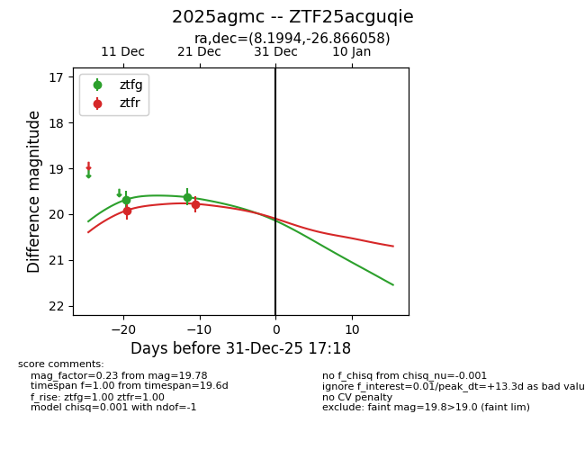
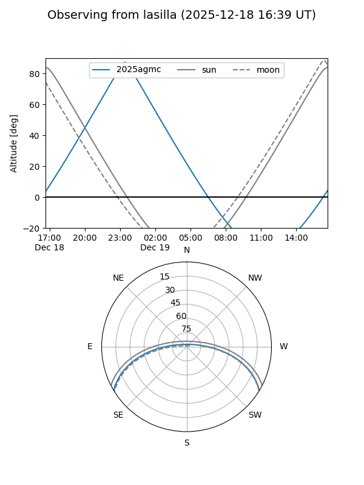
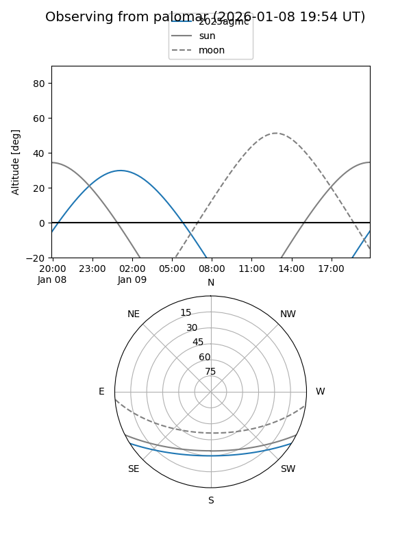
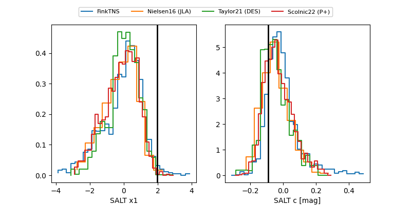

2025agmc
Target 2025agmc at 2025-12-31 18:00
Aliases and brokers:
FINK: link
Lasair: link
ALeRCE: link
TNS: link
YSE: link
alt names
ZTF25acguqie (ztf,fink_ztf)
2025agmc (tns,yse)
Coordinates:
equatorial (ra, dec) = 8.1994,-26.86606
equatorial (HMS+DMS) = 00:32:47.85,-26:51:57.81
galactic (l, b) = (35.4849,-85.83970)
Flags:
Photometry:
last ztfg=19.63, ztfr=19.78
2 ztfg, 2 ztfr detections
Lightcurve

Visibility


Additional plots
